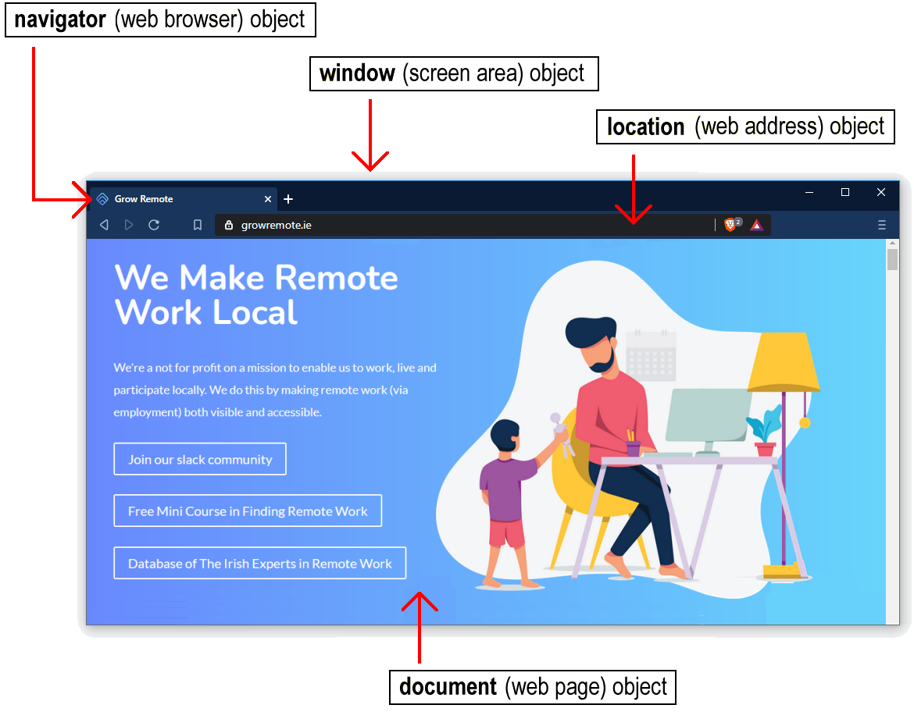
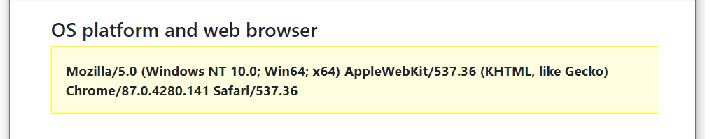
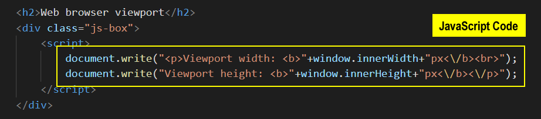
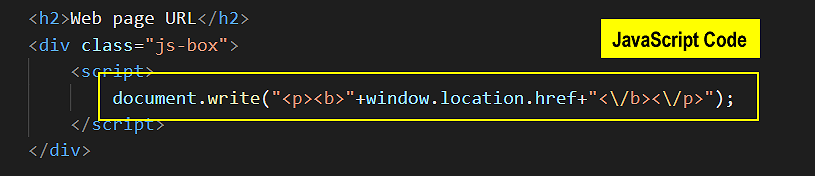
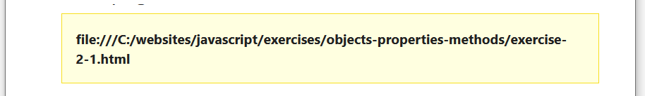
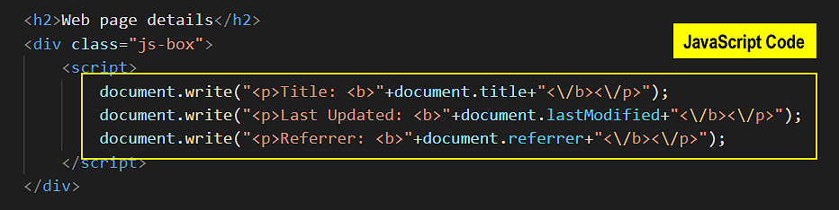
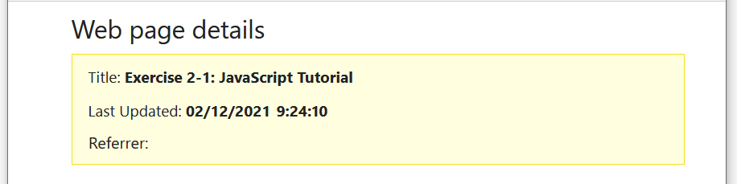

Learning Goals
At the end of this Lesson, you will be able to:
- Display in a web page the values of properties stored in four JavaScript objects: the navigator (web browser) object, the window object, the location (web address) object, and the document (web page) object.
Exercise Files
For this Tutorial, in your javascript/exercises folder, create a new sub-folder named 5.
Save the exercise file below to this new javascript/exercises/5 sub-folder.
In this Lesson you will meet the following JavaScript terms:
- JavaScript Property
- JavaScript Object
About objects, properties and methods
Objects, properties and methods are three important concepts in JavaScript.
object |
A container for holding properties. Many objects contain other objects, which are said to be nested inside them. |
property |
A feature of an object with a name and a value. All values of a property can be read by JavaScript code, and some values can be changed. |
method |
An action that JavaScript code can perform on an object or its properties. Method names end with a parenthesis (). |
This Lesson will focus on four important objects in JavaScript:
- The navigator object (web browser used to display web page).
- The window object (screen area filled by web browser).
- The location object (full web address of web page).
- The document object (web page and all its content).
In the sample screenshot below, you can see the home page of Ireland’s Grow Remote website with these four JavaScript objects highlighted.
JavaScript Object
A container of information (pairs of property names and values). Examples include the navigator, window, location and document objects. Many objects contain other objects nested inside them. JavaScript code can read values of all properties of an object, and some values it can change.
The web browser navigator object
JavaScript refers to the web browser as the navigator object. The name comes from Netscape Navigator, the browser for which JavaScript was developed. Netscape Navigator later evolved into the Mozilla Firebox browser.
One property of the navigator object is called userAgent. See the table below.
Object |
Property Name |
Description |
|---|---|---|
navigator |
userAgent |
Contains the product name, version and platform (operating system) of the web browser. |
In Exercise 5.1 you will use this property to display information about your web browser.
Exercise 5.1: Displaying your web browser properties
Follow these steps:
- Open the index.html file you saved to your /exercises/5 folder.
- Near the top of the web page you can see an HTML <h2> … <h2> sub-heading that contains the text “OS platform and web browser.” Under this sub-heading is an empty pair of opening and closing <script> … </script> HTML tags.
- Copy-and-paste the following line of JavaScript code inside these tags.
document.write("<p><b>"+navigator.userAgent+"<\/b><\/p>");Your VS Code should now look as follows.
- In VS Code, save the web page file. And then reload the page in your web browser.
On Microsoft Windows, for various web browsers, the results should look as shown below.
Mozilla Firefox

Google Chrome
Microsoft Edge

Opera

Leave the 📄 index.html file open in VS Code and your web browser. You will update it three more times in this Lesson.
Web browser-sniffing
When a web browser sends a request to a webserver to display a web page, it sends along with the request information about itself from the userAgent property of its navigator object.

It can be important for a webserver to know which web browser, browser version and operating system a website visitor is using. With this information, the webserver can deliver the appropriate version of its web pages to the user.

As you can see from Exercise 2-1, the information stored in the userAgent can be a misleading. For example, almost all web browsers display as ‘Mozilla’. And both the 32-bit and 64-bit versions of Microsoft Windows display as ‘Win-64’.
JavaScript developers use browser detection or ‘browser sniffing’ programs to analyse the content of the userAgent property for tell-tale signs of which browser is actually is sending the web page request.
JavaScript Object Property
A feature or characteristic of an object that can be accessed or set using JavaScript methods. Some properties are scriptable; others are read-only.
Displaying literals with document.write()
When typing document.write() statements, only enclose within quotes those items that you want interpreted literally.
For example, the following statement in VSCode will display the language version of your web browser.
document.write("Web browser language: "+navigator.language);
It will produce an output such as the following.

What would happen if you did enclose everything inside the parenthesis () within quotes?
document.write("Web browser language: +navigator.language");
The result will look as shown below.

This is not an error or a ‘bug’. The above JavaScript code will run perfectly. But the result is probably not what you want!
You don’t want the text “navigator.language” displayed on the web page. What you want is the value of that object property. That is why the object property is not enclosed within quotes.
The window object of the web browser
The window object represents the user’s screen area in the web browser.
The area of the web browser window that displays web page content is called the viewport. The viewport excludes any menubar, tab names and web address bar at the top of the window, and also any scrollbars at the right or along the bottom.
The properties of the window object of particular interest to JavaScript programmers are shown in the table below.
Object |
Property Name |
Description |
|---|---|---|
|
innerWidth |
The width of the browser viewport in pixels. |
|
innerHeight |
The height of the browser viewport in pixels. |
Exercise 5.2: Displaying your viewport dimensions
Let’s use these two properties to display the dimensions of your web browser viewport.
- In your index.html exercise file in VS Code, you can see a second sub-heading of “Web browser viewport” and under it an empty pair of opening and closing pair of <script> … </script> HTML tags.
- Copy-and-paste the following four lines of JavaScript code inside these tags.
document.write("<p>Viewport width: <b>"+window.innerWidth+"px<\/b><br>"); document.write("Viewport height: <b>"+window.innerHeight+"px<\/b><\/p>");Your VS Code should now look as follows.  - Save your web page and reload your web browser. The result should look similar to that below.

Leave the 📄 index.html.html file open in VS Code and your web browser. You will make two more updates to it.
The location object of the web page
The history object is part of the window object and is accessed through the window.history property.
The location object contains the Uniform Resource Locator (URL) of the currently displayed web page. It can be accessed by JavaScript code through either the window.location or document.location object properties.
One of its properties are shown in the table below.
Object |
Property Name |
Description |
|---|---|---|
window.location or document.location |
href |
The full URL of the web page. For example, https://www.website.com/products/shoes/index.html or https://mysite.github.io/contact/index.html. |
Exercise 5.3: Displaying your web page URL
Let’s update the exercise web page to display its address.
- In your 📄 index.html file in VS Code, you can see a third sub-heading of “Web page URL” and under it an empty pair of opening and closing <script> … </script> HTML tags.
- Copy-and-paste the following line of JavaScript code inside these tags.
document.write("<p><b>"+window.location.href+"<\/b><\/p>");Your VS Code should now look as follows.  - Save your web page and reload your web browser. The result should look similar to that below. 
Leave the 📄 index.html file open in VS Code and your web browser. You will make one more update to it.
About objectname.propertyname notation
In JavaScript code, the standard format for writing the name of an object and one of its properties is as follows.
objectname.propertyname
Note that a full stop (.) is used to separate the name of the property from the name of the object. Below are some examples of JavaScript statements that display a property value of a particular object. The first one you already used in Exercise 5.1.
document.write(navigator.userAgent); document.write(window.innerWidth); document.write(document.title);
The web page document object
In web development generally, the term ‘HTML file.’ is used for what most Internet users refer to simply as a ‘web page.’ In JavaScript programming, however, a web page is known as a ‘document’.
Details of the web page displayed in the web browser window are stored in what is called the document object. The following table lists three of this object’s properties.
Object |
Property Name |
Description |
|---|---|---|
document |
title |
The title of the web page, as contained within the pair of <title> … </title> HTML tags in the head of the page. |
|
lastModified |
The date and time when the web page was created, in the user's local time zone. And if the page was since changed, the date and time when the most recent update was made. Dates are shown in the US format of MM/DD/YYYY. Times are shown in 24-hour format. |
|
referrer |
The URL of the web page from which the user arrived at the current page. This will be empty if the current web page was not opened through a hyperlink. For example, through a bookmark. |
Exercise 5.4: Displaying your web page details
Let’s use these properties to display details about your exercise 2-1.html web page.
- In your 📄 index.html.html file in VS Code, you can see a fourth sub-heading of “Web page details” and under it an empty pair of opening and closing <script> … </script> HTML tags.
- Copy-and-paste the following three lines of JavaScript code inside these tags.
document.write("<p>Title: <b>"+document.title+"<\/b><\/p>"); document.write("<p>Last Updated: <b>"+document.lastModified+"<\/b><\/p>"); document.write("<p>Referrer: <b>"+document.referrer+"<\/b><\/p>");Your VS Code should now look as follows.  - Save your web page and reload your web browser. The result should look similar to that below. 
You have now finished working with your 📄 exercise-2-1.html file. You can close it in VS Code and your web browser.
About objects and methods
In these first two Lessons you have been using the document.write() statements to display output on screen.
More exactly, you have been using the write() method of the document object to input content to an HTML file.
In JavaScript, the name of a method ends in a pair of brackets, called a parenthesis. In some methods, the parenthesis contains some content. For example:
document.write("This is a sample string.");
window.confirm("Did you enjoy this web page?");
In other methods the parenthesis can be empty. The following code closes the currently open window. Or, to use JavaScript terminology, it applies the close() method to the window object.
window.close();
JavaScript Method
An action performed by JavaScript code on an object. Method names end with a parenthesis (). For example, the document object has a write() method, and the window object has alert(), confirm() and close() methods.